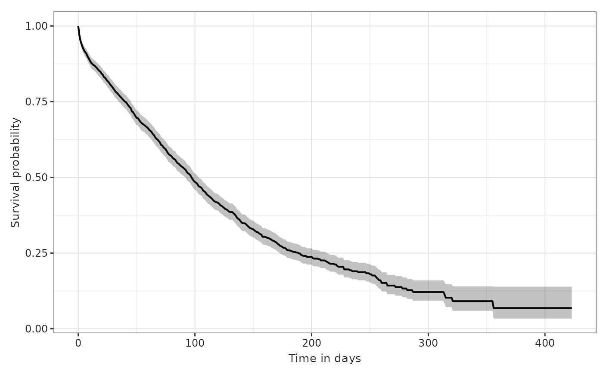
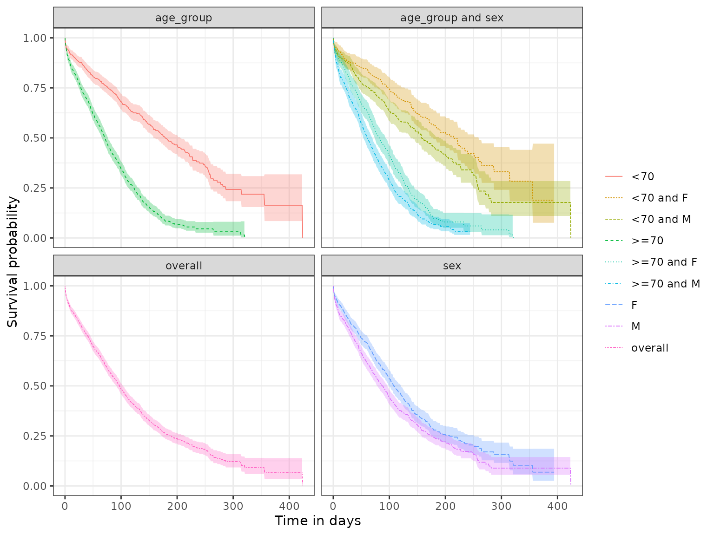

Single outcome event of interest
a01_Single_event_of_interest.RmdSet up
Let’s first load the packages required.
We’ll create a cdm reference to use our example MGUS2 survival dataset. In practice you would use the CDMConnector package to connect to your data mapped to the OMOP CDM.
cdm <- CohortSurvival::mockMGUS2cdm()In this vignette we’ll first estimate survival following a diagnosis of MGUS, with death our outcome of interest.
We would typically need to define study cohorts ourselves, but in the case of our example data we already have these cohorts available. You can see for our diagnosis cohort we also have a number of additional features recorded for individuals which we’ll use for stratification.
cdm$mgus_diagnosis %>%
glimpse()
#> Rows: ??
#> Columns: 10
#> Database: DuckDB v0.10.2 [unknown@Linux 6.5.0-1021-azure:R 4.4.0/:memory:]
#> $ cohort_definition_id <int> 1, 1, 1, 1, 1, 1, 1, 1, 1, 1, 1, 1, 1, 1, 1, 1, 1…
#> $ subject_id <dbl> 1, 2, 3, 4, 5, 6, 7, 8, 9, 10, 11, 12, 13, 14, 15…
#> $ cohort_start_date <date> 1981-01-01, 1968-01-01, 1980-01-01, 1977-01-01, …
#> $ cohort_end_date <date> 1981-01-01, 1968-01-01, 1980-01-01, 1977-01-01, …
#> $ age <dbl> 88, 78, 94, 68, 90, 90, 89, 87, 86, 79, 86, 89, 8…
#> $ sex <fct> F, F, M, M, F, M, F, F, F, F, M, F, M, F, M, F, F…
#> $ hgb <dbl> 13.1, 11.5, 10.5, 15.2, 10.7, 12.9, 10.5, 12.3, 1…
#> $ creat <dbl> 1.30, 1.20, 1.50, 1.20, 0.80, 1.00, 0.90, 1.20, 0…
#> $ mspike <dbl> 0.5, 2.0, 2.6, 1.2, 1.0, 0.5, 1.3, 1.6, 2.4, 2.3,…
#> $ age_group <chr> ">=70", ">=70", ">=70", "<70", ">=70", ">=70", ">…
cdm$death_cohort %>%
glimpse()
#> Rows: ??
#> Columns: 4
#> Database: DuckDB v0.10.2 [unknown@Linux 6.5.0-1021-azure:R 4.4.0/:memory:]
#> $ cohort_definition_id <int> 1, 1, 1, 1, 1, 1, 1, 1, 1, 1, 1, 1, 1, 1, 1, 1, 1…
#> $ subject_id <dbl> 1, 2, 3, 4, 5, 6, 7, 8, 10, 11, 12, 13, 14, 15, 1…
#> $ cohort_start_date <date> 1981-01-31, 1968-01-26, 1980-02-16, 1977-04-03, …
#> $ cohort_end_date <date> 1981-01-31, 1968-01-26, 1980-02-16, 1977-04-03, …Overall survival
First, we can estimate survival for the cohort overall like so. Note that the output will be in a summarised result format.
MGUS_death <- estimateSingleEventSurvival(cdm,
targetCohortTable = "mgus_diagnosis",
outcomeCohortTable = "death_cohort"
)
MGUS_death %>%
glimpse()
#> Rows: 1,318
#> Columns: 13
#> $ result_id <int> 1, 1, 1, 1, 1, 1, 1, 1, 1, 1, 1, 1, 1, 1, 1, 1, 1, 1,…
#> $ cdm_name <chr> "mock", "mock", "mock", "mock", "mock", "mock", "mock…
#> $ group_name <chr> "cohort", "cohort", "cohort", "cohort", "cohort", "co…
#> $ group_level <chr> "mgus_diagnosis", "mgus_diagnosis", "mgus_diagnosis",…
#> $ strata_name <chr> "overall", "overall", "overall", "overall", "overall"…
#> $ strata_level <chr> "overall", "overall", "overall", "overall", "overall"…
#> $ variable_name <chr> "survival_probability", "survival_probability", "surv…
#> $ variable_level <chr> "death_cohort", "death_cohort", "death_cohort", "deat…
#> $ estimate_name <chr> "estimate", "estimate_95CI_lower", "estimate_95CI_upp…
#> $ estimate_type <chr> "numeric", "numeric", "numeric", "numeric", "numeric"…
#> $ estimate_value <chr> "1", "1", "1", "0.9697", "0.9607", "0.9787", "0.9494"…
#> $ additional_name <chr> "time &&& outcome", "time &&& outcome", "time &&& out…
#> $ additional_level <chr> "0 &&& death_cohort", "0 &&& death_cohort", "0 &&& de…
class(MGUS_death)
#> [1] "summarised_result" "omop_result" "tbl_df"
#> [4] "tbl" "data.frame"We can though convert the result to be in a survival format using asSurvivalResult()
MGUS_death %>%
asSurvivalResult() %>%
glimpse()
#> Rows: 1,275
#> Columns: 13
#> $ result_id <int> 1, 1, 1, 1, 1, 1, 1, 1, 1, 1, 1, 1, 1, 1, 1, 1, 1, 1, 1…
#> $ cdm_name <chr> "mock", "mock", "mock", "mock", "mock", "mock", "mock",…
#> $ cohort <chr> "mgus_diagnosis", "mgus_diagnosis", "mgus_diagnosis", "…
#> $ outcome <chr> "death_cohort", "death_cohort", "death_cohort", "death_…
#> $ strata_name <chr> "overall", "overall", "overall", "overall", "overall", …
#> $ strata_level <chr> "overall", "overall", "overall", "overall", "overall", …
#> $ variable_name <chr> "survival_probability", "survival_probability", "surviv…
#> $ variable_level <chr> "death_cohort", "death_cohort", "death_cohort", "death_…
#> $ estimate_name <chr> "estimate", "estimate_95CI_lower", "estimate_95CI_upper…
#> $ estimate_value <dbl> 1.0000, 1.0000, 1.0000, 0.9697, 0.9607, 0.9787, 0.9494,…
#> $ time <dbl> 0, 0, 0, 1, 1, 1, 2, 2, 2, 3, 3, 3, 4, 4, 4, 5, 5, 5, 6…
#> $ result_type <chr> "survival", "survival", "survival", "survival", "surviv…
#> $ analysis_type <chr> "single_event", "single_event", "single_event", "single…As we can see above our results have been outputted in long format. We can plot these results like so.
plotSurvival(MGUS_death)
Our returned results also have attributes containing information that summarises survival.
tableSurvival(MGUS_death) | CDM name | Cohort | Outcome name | Number records | Number events | Median survival (95% CI) | Restricted mean survival (SE) |
|---|---|---|---|---|---|---|
| mock | Mgus diagnosis | Death cohort | 1,384 | 963 | 98.00 (92.00, 103.00) | 133.00 (4.00) |
With stratification
To estimate survival for particular strata of interest we need these features to have been added to the target cohort table. Once we have them defined, and as seen above we already have a number of example characteristics added to our diagnosis cohort, we can add stratifications like so.
MGUS_death <- estimateSingleEventSurvival(cdm,
targetCohortTable = "mgus_diagnosis",
outcomeCohortTable = "death_cohort",
strata = list(c("age_group"),
c("sex"),
c("age_group", "sex"))
) As we can see as well as results for each strata, we’ll always also have overall results returned.
plotSurvival(MGUS_death,
facet = "strata_name",
colour = "strata_level")
And we also now have summary statistics for each of the strata as well as overall.
tableSurvival(MGUS_death)| CDM name | Cohort | Age group | Sex | Outcome name | Number records | Number events | Median survival (95% CI) | Restricted mean survival (SE) |
|---|---|---|---|---|---|---|---|---|
| mock | Mgus diagnosis | Overall | Overall | Death cohort | 1,384 | 963 | 98.00 (92.00, 103.00) | 133.00 (4.00) |
| <70 | Overall | Death cohort | 574 | 293 | 180.00 (158.00, 206.00) | 197.00 (8.00) | ||
| >=70 | Overall | Death cohort | 810 | 670 | 71.00 (66.00, 77.00) | 86.00 (3.00) | ||
| Overall | F | Death cohort | 631 | 423 | 108.00 (100.00, 121.00) | 143.00 (6.00) | ||
| M | Death cohort | 753 | 540 | 88.00 (79.00, 97.00) | 125.00 (6.00) | |||
| <70 | F | Death cohort | 240 | 109 | 215.00 (179.00, 260.00) | 220.00 (13.00) | ||
| M | Death cohort | 334 | 184 | 158.00 (139.00, 189.00) | 183.00 (10.00) | |||
| >=70 | F | Death cohort | 391 | 314 | 82.00 (75.00, 94.00) | 96.00 (4.00) | ||
| M | Death cohort | 419 | 356 | 61.00 (54.00, 70.00) | 80.00 (5.00) |
Summarising participants
If we set returnParticipants as TRUE then we will also be able to access the individuals that contributed to the analysis.
MGUS_death <- estimateSingleEventSurvival(cdm,
targetCohortTable = "mgus_diagnosis",
outcomeCohortTable = "death_cohort",
returnParticipants = TRUE
)
survivalParticipants(MGUS_death)
#> # A tibble: 1,384 × 6
#> cohort_definition_id subject_id cohort_start_date cohort_end_date exposure_id
#> <int> <dbl> <date> <date> <int>
#> 1 1 1 1981-01-01 1981-01-01 1
#> 2 1 2 1968-01-01 1968-01-01 1
#> 3 1 4 1977-01-01 1977-01-01 1
#> 4 1 5 1973-01-01 1973-01-01 1
#> 5 1 6 1990-01-01 1990-01-01 1
#> 6 1 10 1981-01-01 1981-01-01 1
#> 7 1 11 1972-01-01 1972-01-01 1
#> 8 1 12 1983-01-01 1983-01-01 1
#> 9 1 13 1968-01-01 1968-01-01 1
#> 10 1 15 1979-01-01 1979-01-01 1
#> # ℹ 1,374 more rows
#> # ℹ 1 more variable: outcome_id <int>Disconnect from the cdm database connection
cdm_disconnect(cdm)